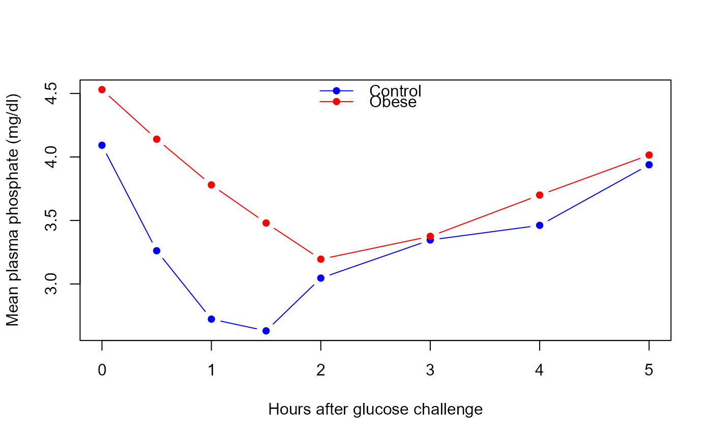
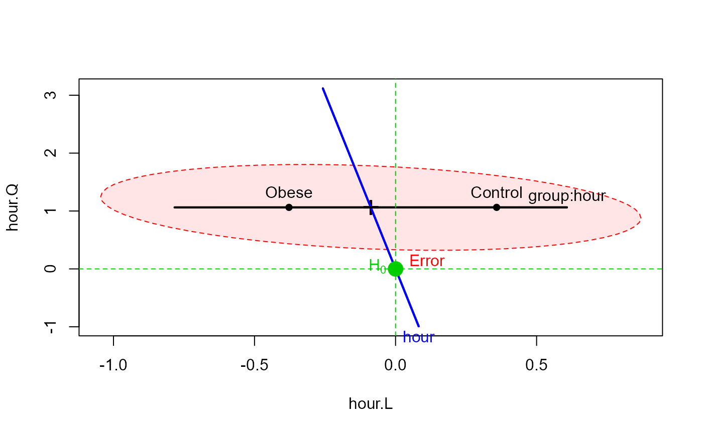
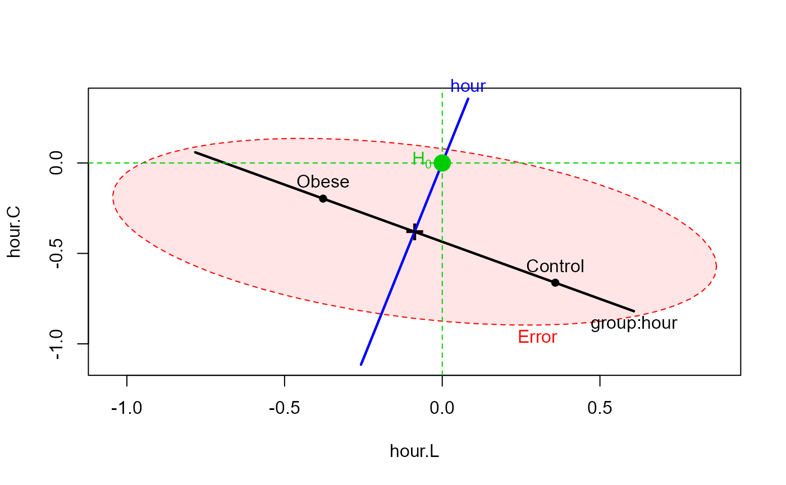
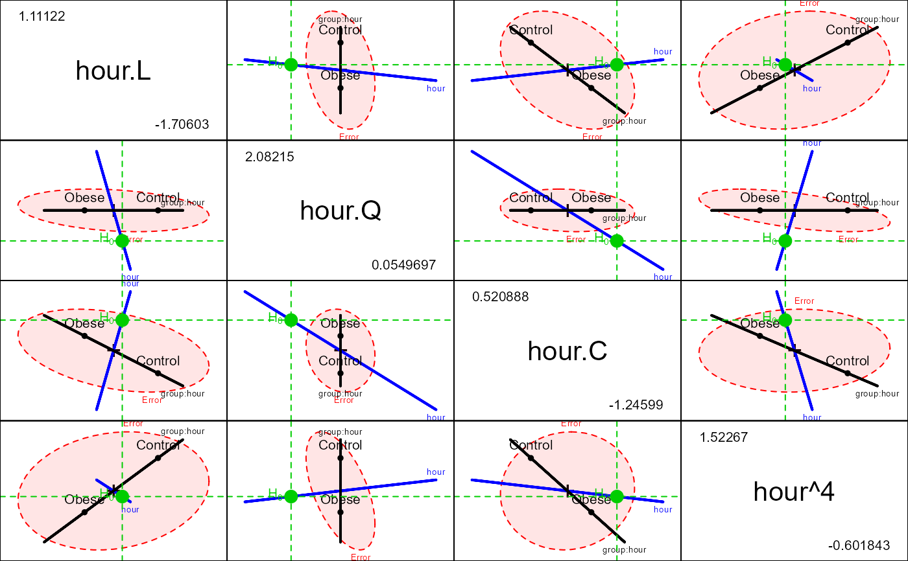

Plasma inorganic phosphate (mg/dl) was measured in 13 control and 20 obese patients at 8 times, from 0 to 5 hours after an oral glucose challenge. The times are not equally spaced.
Both groups show a U-shaped curve over time, but the controls dip more deeply and earlier (lowest at about 1.5 hours) than the obese patients (lowest at about 2 hours), giving a strong group by time interaction.
Format
A data frame with 33 observations on the following 9 variables.
group: a factor with levelsControl,Obesehr0: phosphate at 0 hours (before the challenge)hr0.5: at 0.5 hourshr1: at 1 hourhr1.5: at 1.5 hourshr2: at 2 hourshr3: at 3 hourshr4: at 4 hourshr5: at 5 hours
Source
Rencher, A. C. & Christensen, W. F. (2012), Table 6.28, from the
rencher package (table6.28). Originally from Zerbe, G. O. (1979).
Randomization analysis of the completely randomized design extended to
growth curves. Journal of the American Statistical Association, 74,
215–221.
Details
For a repeated measures analysis, use polynomial contrasts in the
actual times, contr.poly(8, scores = c(0, 0.5, 1, 1.5, 2, 3, 4, 5)),
rather than equally spaced ones, as in the examples.
The two groups differ on the linear, cubic and quartic components of
time, but not at all on the quadratic: the curves are equally U-shaped,
and differ in where and how sharply they dip. So an HE plot of the
linear and quadratic components misses most of the interaction; other
views, or pairs.mlm(), show it.
Rencher & Christensen (2012) note that the first patient in each group has nearly identical values (they differ only at 4 and 5 hours), which they take to be coincidental.
References
Rencher, A. C. & Christensen, W. F. (2012). Methods of Multivariate Analysis, 3rd ed. Hoboken, NJ: Wiley. Problems 6.43, 6.44.
Examples
data(Phosphate)
table(Phosphate$group)
#>
#> Control Obese
#> 13 20
hours <- c(0, 0.5, 1, 1.5, 2, 3, 4, 5)
resp <- paste0("hr", hours)
# mean profiles
means <- aggregate(Phosphate[, resp], list(group = Phosphate$group), mean)
matplot(hours, t(means[, resp]), type = "b", pch = 16, lty = 1,
col = c("blue", "red"),
xlab = "Hours after glucose challenge",
ylab = "Mean plasma phosphate (mg/dl)")
legend("top", legend = means$group, col = c("blue", "red"),
lty = 1, pch = 16, bty = "n")

# within-S design: orthogonal polynomials in the actual hours
idata <- data.frame(hour = ordered(hours))
contrasts(idata$hour) <- contr.poly(8, scores = hours)
phos.mod <- lm(cbind(hr0, hr0.5, hr1, hr1.5, hr2, hr3, hr4, hr5) ~ group,
data = Phosphate)
car::Anova(phos.mod, idata = idata, idesign = ~hour)
#>
#> Type II Repeated Measures MANOVA Tests: Pillai test statistic
#> Df test stat approx F num Df den Df Pr(>F)
#> (Intercept) 1 0.97901 1445.96 1 31 < 2.2e-16 ***
#> group 1 0.15678 5.76 1 31 0.0225500 *
#> hour 1 0.91570 38.79 7 25 7.021e-12 ***
#> group:hour 1 0.61656 5.74 7 25 0.0004822 ***
#> ---
#> Signif. codes: 0 '***' 0.001 '**' 0.01 '*' 0.05 '.' 0.1 ' ' 1
# linear x quadratic: group:hour stays inside E in this view
heplot(phos.mod, idata = idata, idesign = ~hour, iterm = "hour",
variables = c("hour.L", "hour.Q"), fill = TRUE, fill.alpha = 0.1)

# linear x cubic shows more of the interaction
heplot(phos.mod, idata = idata, idesign = ~hour, iterm = "hour",
variables = c("hour.L", "hour.C"), fill = TRUE, fill.alpha = 0.1)

pairs(phos.mod, idata = idata, idesign = ~hour, iterm = "hour",
variables = 1:4, fill = TRUE, fill.alpha = 0.1)
